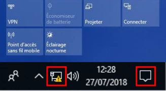
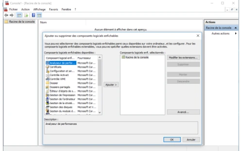
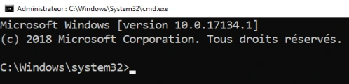
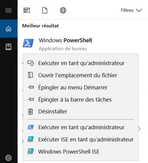
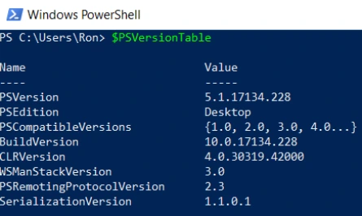
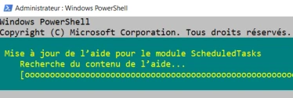

Transcription du document de formation. Les paragraphes, listes, tableaux et visuels isolés suivent l’ordre du document ; les aides pédagogiques sont séparées.

Le support annonce une démonstration de l’interface graphique.

command.com pour les OS basés sur MS-DOS, avant Win9x.cmd.exe pour les OS basés sur WinNT, Windows NT, 2000 et plus.Outre l’interface graphique GUI, l’interface ligne de commande CLI :
- Le shell cmd.exe, command prompt, pour « aiguiser » le système de manière plus « pointue ».
- Évolution de command.com présent nativement avec MS-DOS.
- Interagir avec l’OS grâce aux commandes internes au shell et grâce à des commandes externes.
- Interpréter des fichiers batch, script.
C:\windows\system32> help
C:\windows\system32> help shutdown
Dans le premier exemple : prompt, commande seule. Dans le second : prompt, commande help, paramètre shutdown.

C:\windows\system32> shutdown /r /t 0
Prompt : C:\windows\system32> ; commande : shutdown ; option seule : /r ; option et son paramètre : /t 0.
/.'Mes Documents'.> et/ou des doubles chevrons >>.help shutdown > aide.txt
Cet exemple enregistre l’aide détaillée de la commande shutdown dans le fichier aide.txt au lieu d’afficher l’aide détaillée à l’écran.
À l’aide ! La commande help [<commande>] est indispensable.
C:\windows\system32> help copy
COPY [/D] [/V] [/N] [/Y | /-Y] [/Z] [/L] [/A | /B ] source
[/A | /B] [+ source [/A | /B] [+ ...]] [cible [/A | /B]]
| Notation | Description |
|---|---|
| Texte sans crochet ou accolades | Élément obligatoire que vous devez taper ou choisir une valeur. |
[texte entre crochet] |
Éléments facultatifs. |
{Texte entre accolades} |
Choisir un des éléments parmi ceux présents. |
Barre verticale ou « pipeline » \| |
Séparateur d’éléments. |
Points de suspension … |
Éléments qui peuvent être répétés et utilisés plusieurs fois. |
Le support reprend la syntaxe COPY ci-dessus :
- COPY et source obligatoire.
- Possibilité de choisir 0, 1 ou des options seules : /D, /N, /A ou /B car il y a un |.
- Possibilité de choisir plusieurs sources.
- Pour plus de détails et exemples, consultez l’aide en ligne : https://docs.microsoft.com/fr-fr/windows-server/administration/windows-commands/windows-commands
Utilisation de la ligne de commande cmd.exe.
Prise en main de la commande cmd.
| Date | Version | Version de Windows associée | Autres versions disponibles indiquées |
|---|---|---|---|
| Novembre 2006 | PowerShell 1.0 | Windows Server 2008 | Windows XP SP2 et suivants ; Windows Server 2003 R2 SP1 et suivants ; Windows Vista SP1 et suivants. |
| Octobre 2009 | PowerShell 2.0 | Windows 7 ; Windows Server 2008 R2 | Windows XP SP3 ; Windows Server 2003 SP2 ; Windows Vista SP1 et suivants ; Windows Server 2008 SP1 et suivants. |
| Septembre 2012 | PowerShell 3.0, .NET 4.0 requis | Windows 8 ; Windows Server 2012 | Windows 7 SP1 ; Windows Server 2008 SP2 ; Windows Server 2008 R2 SP1. |
| Octobre 2013 | PowerShell 4.0, .NET 4.5 requis | Windows 8.1 ; Windows Server 2012 R2 | Windows 7 SP1 ; Windows Server 2008 R2 SP1 ; Windows Server 2012. |
| Septembre 2014 | PowerShell 5.0, .NET 4.5 requis | Windows 10 | Windows 8.1 ; Windows Server 2012 R2. |
$PSVersionTable : variable tableau des versions de PowerShell

Get-Alias : affiche la liste des alias PowerShell.New-LocalUser : crée un nouvel utilisateur local dans l’ordinateur.Get-ChildItem -Path C:\users
Get-ChildItem : cmdlet ; -Path : paramètre ; C:\users : argument.
| Touche | Description |
|---|---|
| Tab / Maj + Tab | Complétion d’un chemin, du nom de la commande, d’un paramètre et d’une valeur de paramètre. |
| Ctrl + Espace | Liste des différentes propositions de la complétion ; flèches directionnelles et Entrée pour choisir. |
| Échap | Efface la ligne de commande en cours de frappe. |
| Haut / Bas | Défilement de l’historique des commandes. |
| Gauche / Droite | Déplace le curseur sur la ligne de commande en cours. |
| Home / Fin | Déplace le curseur en début/fin de ligne. |
| Ctrl + C | Met fin à l’exécution de l’instruction courante. |
cls |
clear screen |
exit |
Ferme la console PowerShell. |
Découvrir PowerShell.
Premiers pas avec PowerShell.
Update-Help.-Force pour outrepasser la limite d’une MAJ/j.Update-Help -SourcePath \\chemin\vers\aide\PowerShell -UICulture en-US -Credential <login>
Get-Help <recherche>.Help <recherche> affiche l’aide page par page.Man <recherche>, alias de Help.<recherche> -?, disponible depuis toutes les cmdlets.Get-Help Disable-LocalUser : affiche l’aide de la cmdlet Disable-LocalUser.Help Help : affiche « l’aide de l’aide » page par page.Man about_Variables : affiche le manuel d’utilisation des variables PowerShell, page par page.Help about_* affiche la liste des concepts disponibles.
Get-Help -Examples <recherche> : n’affiche que les exemples d’utilisation de la cmdlet.Get-Help -ShowWindow <recherche> : affiche l’aide complète dans une fenêtre séparée.Get-Help -Online <recherche> : affiche l’aide à jour détaillée disponible sur les serveurs Internet Microsoft, navigateur Internet requis.Manipuler l’aide de PowerShell.
La notion d’objet provient du monde de la programmation.
Exemples d’objets PowerShell : carte réseau, disque dur, utilisateur, fichier, etc.
Un objet comporte : - des propriétés, ses caractéristiques ; - des méthodes, ses actions.
Un objet PowerShell s’apparente à un objet du monde réel. Exemple : l’objet monBallon.
| Commande | Explication du support |
|---|---|
Get-monBallon |
Affiche certaines propriétés, les caractéristiques, de l’objet monBallon et leurs valeurs associées. Toutes les autres propriétés sont présentes mais cachées pour faciliter la lecture à l’écran. |
Get-monBallon \| select * |
Affiche toutes les propriétés de l’objet monBallon et leurs valeurs associées. |
Get-monBallon \| select diamètre,forme,couleur |
N’affiche seulement que les propriétés demandées et leurs valeurs associées. |
(Get-monBallon).description |
Affiche la propriété description de l’objet monBallon et sa valeur. Équivaut, dans le support, à Get-monBallon \| select description. |
Get-Command, sans paramètres ni arguments, liste toutes les commandes de PowerShell !Get-Command Get-* affiche toutes les commandes commençant par le verbe Get.Get-Command *printer* affiche toutes les commandes contenant la chaîne de caractères printer.Get-Command New-*user* affiche toutes les cmdlets commençant par New ET contenant la chaîne de caractères user.Get-Help pour vous l’approprier.Mon ballon de basket possède une valeur erronée pour la propriété Description, je veux modifier la valeur :
Set-monBallon -Nom "Basket" -Description "Ballon de Basket"
Je veux un nouveau ballon de rugby blanc :
New-monBallon -Nom "Rugby" -Forme "ovale" -Couleur "blanc" -Description "Ballon de rugby"
Je n’ai plus besoin de mon ballon de football :
Remove-monBallon -Nom "Football"
Cmdlets de base.
Devenir autonome avec PowerShell.